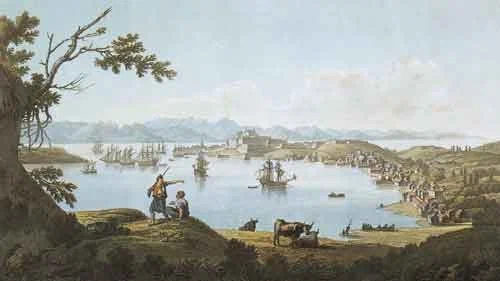
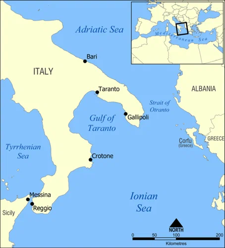
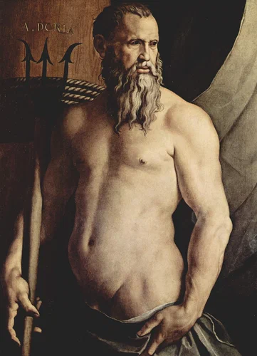

В то самое время, когда победоносное испанское, немецкое, итальянское воинство предавалось грабежам и разбою на улицах Туниса, великий визирь Ибрагим-паша во главе своей «дикой азиатской» армии входил в Багдад и Тебриз. Мирные жители захваченных городов не пострадали. Воистину, Fas est et ab hoste doceri. Учиться дозволено и у врага.
Задача, поставленная султаном перед Хайреддином Барбароссой была полностью выполнена. Европейские армии не сдвинулись с места, чтобы помешать Сулейману в завершении его персидского похода. В этом отношении тунисская экспедиция Карла V оказалась бесплодной. И тем не менее вся Европа гордилась ее успехами. Ее воспевали поэты и живописали художники. Мастера керамики из Урбино выжигали сцены тунисского похода на вазах. Карл представал в образе рыцаря-крестоносца. Уверовав в свое величие, император даже отдал распоряжение о создании нового рыцарского ордена «Крест Туниса» с девизом " Barbaria", о котором, правда, кроме этого девиза в истории так ничего и не сохранилось.
Когда страсти вокруг Туниса и набега на Менорку немного улеглись, а флоты европейских держав разбрелись по зимним квартирам, Барбаросса отправился из Алжира в Стамбул. К этому времени забылось, что капудан-паша сдал Тунис, но в памяти стамбульских правителей осталась Менорка, так как подкреплена она была хорошими подарками, добытыми в том набеге. Хайреддина встретили новыми должностями и новыми почестями. После казни всесильного главного визиря Ибрагим-паши сменились и политические ориентиры Османской империи. Ибрагим всегда стремился к дружеским отношениям с Венецией, своей родиной, и на протяжении более тридцати лет между империей и Светлейшей поддерживался мир. Барбаросса напротив, страстно желал померяться силами своих галер с флотом Венеции, признанным фаворитом на морских просторах Адриатики. Это направление в политике османов всячески приветствовал французский король Франциск I. Да и сами венецианцы вконец запутались в своих маневрах между султаном, Карлом V и Франциском I. Стремясь хоть как то обезопасить себя от надвигающейся турецкой угрозы, сенат Венеции заключил союз с Папством и Священной Римской империей в надежде поставить заслон турецкому флоту на Адриатике, однако это только ускорило развязку. В мае 1537 года Барбаросса во главе вновь отстроенного флота Османской империи в составе ста тридцати пяти галер вышел из Дарданелл. В течение целого месяца он опустошал берега Апулии, в то время как Дориа со своим флотом сторожил его в Мессинском проливе. Десять тысяч рабов стали добычей Барбароссы. Но начавшаяся война с Венецией заставила Хайреддина с флотом покинуть итальянское побережье и направиться на блокаду острова Корфу, опорного пункта венецианцев перед проливом Отранто на входе в Адриатику.

К 18 августа 1537 года Барбаросса овладел узким проливом между островом Корфу и материком. Началась переброска на остров турецких штурмовых отрядов. Турецкие всадники легко преодолели холмистую долину, но взять с ходу крепость Сан-Анджело, стоящую на высокой скале, не удалось.

Турецкие галеры пытались проделать бреши в стенах крепости бомбардировками с моря, но ответный огонь крепостной артиллерии вынудил их отойти с большими потерями. Тяжелые осадные орудия турок были доставлены на пик соседней скалы, чтобы подвергать бомбардировкам внутреннюю территорию крепости, но благодаря мастерству артиллеристов эти огневые точки были подавлены.
6 сентября Сулейман приказал снять осаду и эвакуироваться с Корфу, несмотря на протесты Барбароссы. 15 сентября вывод турецких войск был благополучно завершен. Несмотря на осеннюю непогоду, Барбаросса успешно переправил на континент войска, орудия, лошадей, трофеи и пленных.
Освободившись от обузы, связанной с осадой Корфу, флот Барбароссы взял на борт десантников во главе с Лютфи-пашой и устремился к островам Архипелага. Были разорены и захвачены венецианские острова Кефалония, Эгина, Иос, Парос, Тинос, Карпатос, Касос и Наксос. Наксосское герцогство было присоединено к Османской империи.
Перед лицом очевидной турецкой угрозы папа Павел III сумел создать очередную «Священную лигу» в составе Папства, Испании, Генуэзской и Венецианской Республик и Мальтийского ордена. Создается объединенный флот. Командование морской операцией Священной лиги против турок возлагается на вице-короля Сицилии Ферранте Гонзага. Новый командующий начинает собирать эскадры участников Лиги в Неаполе и на Сицилии, однако политические споры и разногласия затягивают этот процесс. Особенно неспешно ведет себя Карл V. Хотя решением о создании Лиги и предусматривалось, что после поражения Порты он станет императором Константинополя, он не прекращает попыток мирного решения споров с турками. Инициатива полностью отдана Барбароссе, и он не преминул воспользоваться нерешительностью союзников и атаковал владения Венеции в Ионическом и Эгейском морях. Командующие венецианским флотом Винченцо Капелло и папским флотом Марко Кримани настаивали на немедленном выступлении против турецкого флота, однако Ферранте Гонзага считал, что необходимо сначала дождаться прибытия генуэзских галер Андреа Дориа, который поставлен во главе флота союзников.

Портрет Андреа Дориа как Нептуна. Анжело Брозино (1540-1550), Pinacoteca di Brera, Милан.
Папский флот во главе с М.Кримани 11 августа совершил отчаянную попытку в одиночку напасть на занятую турками крепость Превеза на албанском побережье, чтобы вынудить турецкий флот численностью 160 вымпелов укрыться в Артском заливе и запереть его там. Но попытка эта провалилась.
В результате корабли союзников смогли соединиться только 7-8 сентября 1538 года в гавани острова Корфу, т.е. было потеряно около месяца хорошей погоды и хороших возможностей для атаки турецких эскадр. Последовавшее затем сражение при Превезе, о котором мы поговорим в следующий раз, и которое произошло в тех же водах, что и битва при Акции в 31 году до н.э. между флотами Марка Антония и Октавиана Августа, обернулось поражением флота священной лиги. Бездарное руководство со стороны Андреа Дориа последующие историки списали на его нелюбовь к венецианцам, и оценили чуть ли не преднамеренным поражением. Как бы то ни было, но потребовалось еще более тридцати лет, чтобы взять реванш при Лепанто.